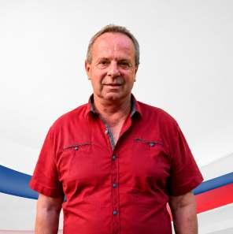

1.Blahoslav Jírů
66 let, podnikatel · lídr kandidátky
„Budoucnost našeho městysu tvoříme všichni společně."
Narodil jsem se 3. května 1960 v Mladé Boleslavi. V Chotětově žiji od roku 1980, kde jsem postavil rodinný dům a vychoval dvě dcery. V Chotětově jsem našel svůj domov a poznal mnoho inspirativních lidí a řadu svých přátel.
Dlouhou dobu jsem pracoval v Agrochemickém podniku v Chotětově, od roku 1993 podnikám coby OSVČ. Podnikání mě naučilo především finanční gramotnosti, zodpovědnosti, umět předvídat a jednat s lidmi. Tyto dovednosti se ukázaly jako klíčové pro neočekávané převzetí vedení městyse v roce 2011.
Za své silné stránky považuji především pracovitost, cílevědomost a zodpovědnost. Jdu si tvrdě za svými cíli, avšak vždy beru v potaz veškeré faktory a rizika, která dokáži racionálně vyhodnotit. Záleží mi na tom, aby byl městys po ekonomické stránce zdravý, aby se mohl do budoucna rozvíjet ve všech směrech bez zbytečných odkladů.
Do chodu městyse se aktivně zapojuji od roku 2010. Po náhlém odchodu bývalého pana starosty Ladislava Šifty jsem coby tehdejší místostarosta plně převzal funkci starosty, kterou jsem zastával až do roku 2022. V současném volebním období působím jako řadový zastupitel městyse.
Do komunálních voleb 2022 jsem šel s cílem, že to bude mé poslední volební období, které využiji především pro předání svých zkušeností novým tvářím. Volby ale nedopadly podle představ — za naši stranu se do zastupitelstva dostali pouze tři kandidáti, což ve mně vyvolalo zklamání, a byl jsem rozhodnutý rezignovat i na funkci zastupitele.
Směřování městyse však pod novým vedením nabralo podle mého názoru nepochopitelný spád. Nedbaje mých apelů a varování ani názorů jiných, vystavilo současné vedení městys značným rizikům, zejména ve finanční oblasti, čemuž jsem nemohl jen přihlížet, a své rozhodnutí jsem přehodnotil. Z veřejné debaty se podle mě začala vytrácet slušnost, respekt k jinému názoru a odpovědnost vůči občanům. Vnímám, že po dlouhých letech vzájemné soudržnosti došlo k rozpolcení společenství občanů obou obcí, což zhoršilo celkovou atmosféru v městysu.
Co se současnému vedení podle mě podařilo
Jednoznačně dokončení námi započatých projektů, například dokončení MŠ Hřivno či převzetí chodníku ke hřbitovu. Plně za současným vedením městyse jde modernizace informačních platforem mezi radnicí a občany (Munipolis a nové webové stránky). Druhá věc ale je, jakým způsobem jsou využívány, zejména po obsahové stránce.
Co považuji za největší problém
Především hrubě nezdařená rekonstrukce ZŠ zapříčinila podle mého názoru zbytečné milionové ztráty a přivedla městys do finančních problémů s možnými dalšími riziky do budoucna. Dle mého zjištění mělo dojít k nerespektování a porušení platných smluv, usnesení zastupitelstva a platných zákonů starostou městyse, což vyústilo v mé podání trestního oznámení k Okresnímu státnímu zastupitelství v Mladé Boleslavi. Státní zástupce měl pravomoc řízení zastavit, pokud by shledal trestní oznámení jako nedůvodné; namísto toho jej postoupil orgánům činným v trestním řízení k dalšímu prošetření. V současné době Policie ČR stále provádí šetření a nikdo nebyl pravomocně odsouzen.
Cítím za současného stavu zodpovědnost vůči novému vedení městyse i vůči občanům postavit městys opět na nohy a finanční situaci stabilizovat. Chci dělat odpovědnou politiku, která nepřivede městys do finančních potíží a bude loajální vůči svým občanům. Rád bych, aby se do našeho městysu vrátily hodnoty, které mají pro jeho zdravé fungování klíčový význam: slušnost a vzájemná úcta, respekt k druhým i názorům druhých, pravda, odpovědnost a transparentnost.
Budoucnost našeho městysu tvoříme všichni společně. Proto budu rád, pokud přijdete k volbám a projevíte svou vůli bez ohledu na své preference. Pokud cítíte, že bych mohl být rozvoji a směřování městyse dále užitečný, budu rád za Vaši podporu.